The Agent Broke It,
the Agent Fixed It
Self-healing progressive delivery on Kubernetes
Carlos Sanchez
Principal Scientist, Adobe
Kevin Dubois
Sr. Principal Developer Advocate, IBM
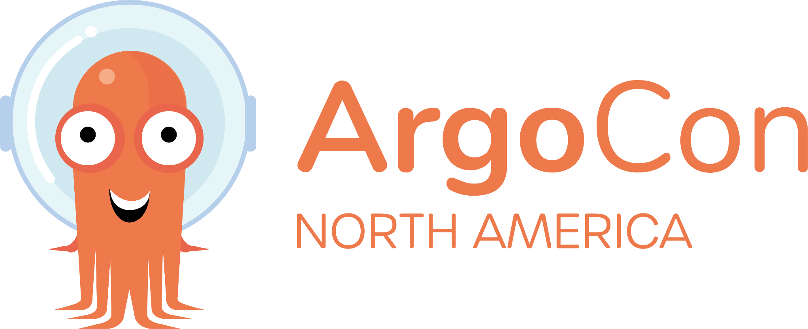
We all have a “friend” who trusts AI code,
perhaps a little too much
42%
of code is AI-assisted
Sonar 2026: 42% of committed
code is AI-generated or assisted
1.7x
more issues per AI PR
CodeRabbit, 470 PRs: 10.83
issues vs 6.45 for humans
43%
of AI changes need debugging
Lightrun 2026: in production,
after passing QA
Sonar, 8 Jan 2026
CodeRabbit, 17 Dec 2025
Lightrun, 14 Apr 2026
Three pushes to everyone at once
Cloudflare
18 November 2025
One generated feature file,
pushed to every data centre
3h02m
of customer impact
First errors 11:28, core traffic
normal at 14:30
CrowdStrike
19 July 2024
One rapid-channel sensor update,
pushed to every host
8.5M
Windows devices
$5.4B in direct losses
across the Fortune 500
Knight Capital
1 August 2012
New code on 7 of 8 servers,
one left on the old code
$460M
lost in 45 minutes
SEC fined Knight $12M for the release
Cloudflare, 18 Nov 2025
CrowdStrike, 24 Jul 2024
SEC, 16 Oct 2013
Anatomy of a bad deploy
11:05
Change deployed
Database access control
change
11:28
Impact starts
Bad feature file reaches
every network
13:05
Rollback begins
Feature file reverted
to earlier version
14:30
Core traffic normal
Most services back
17:06
All clear
Every Cloudflare
system normal
3h02m of customer impact
1h37m to rollback
CI was green, but production is 20% slower
What CI sees
zsh — quarkus-demo
$ mvn verify
[INFO] Tests run: 214, Failures: 0
[INFO] Errors: 0, Skipped: 4
[INFO] BUILD SUCCESSFUL in 42s
What production sees
p95 latency (ms)
stable, v3
50ms
canary, v4
60ms
0
20
40
60
80
+20%
99% success, zero error logs, no alert
Rollback vs recovery
1
Detect
An alert fires and someone opens the dashboard
minutes
to notice
2
Roll back
Argo Rollouts aborts to the last stable ReplicaSet
seconds
to stop the bleeding
3
Diagnose
Logs, metrics, the diff, a local repro
hours
to understand
4
Fix and ship
Patch, test, review, release
days
to actually fix it
DORA 2025: 21.3% of teams recover in under an hour, 43.4% take more than a day
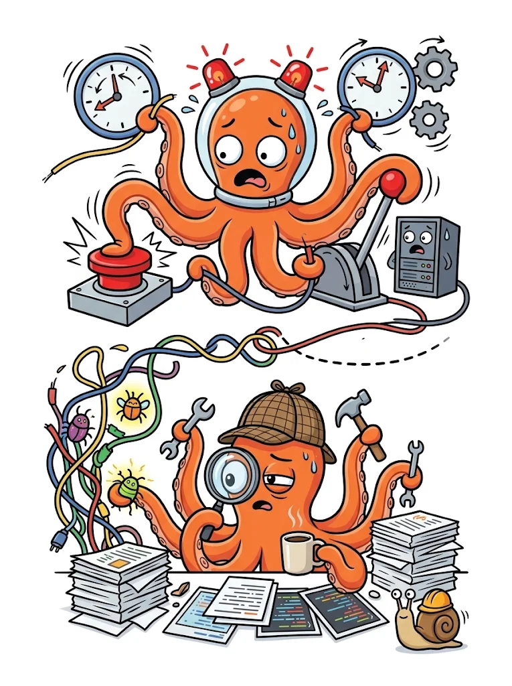
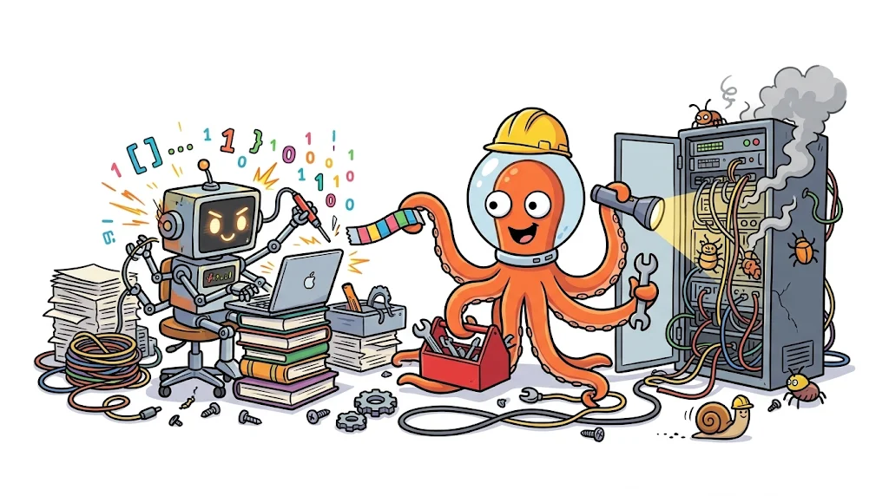
Why an agent should fix it
If it can write the code,
it should be able to write the fix
Logs from the canary
p95 against stable
The diff
The repo
The test suite
The agent
A patch
you review it before it merges
Rollback ASAP, fix after
DECIDE
synchronous, seconds
FIX
asynchronous, minutes
Plugin
3 data agents
Analysis
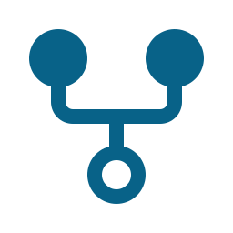
Decision
A2A call
Sandbox
Agent + tests
PR or issue
in parallel
send for analysis
promote or abort?
handoff
run
report back
on rollback
Rollouts calls the agent as a plugin
analysistemplate-ai-agent.yaml
1
1
failureLimit: 0
One failed measurement aborts
2
2
Two measurements
Logs early and metrics later
3
3
Plugin provider
No fork and no new CRD
- name: ai-analysis
failureLimit: 0
count: 2
interval: 30s
initialDelay: 5s
provider:
plugin:
argoproj-labs/metric-ai:
agentUrl: http://kubernetes-agent:8080
stableLabel: role=stable
canaryLabel: role=canary
Double & triple check uncertainty
First analysis
Graded by a decision model
below the confidence threshold
50
Routed to a second opinion
still below the confidence threshold
50
Pause, escalate to a human
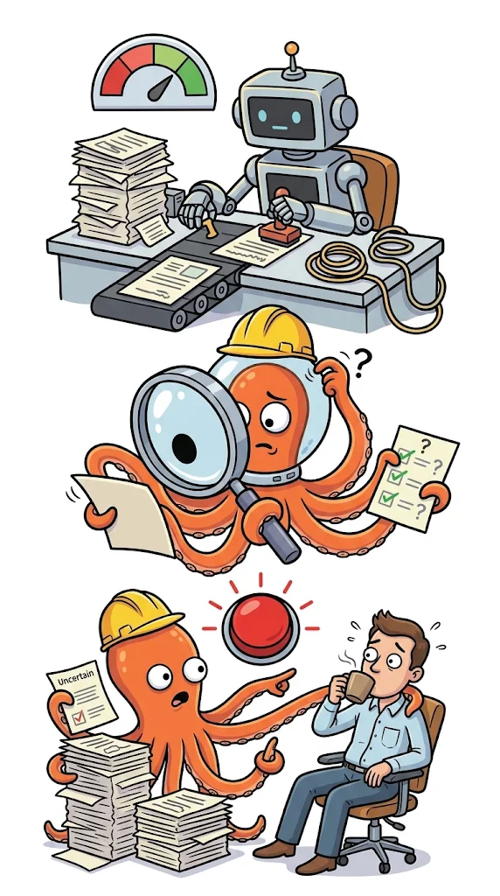
Remediation in Agent Sandbox
Sandbox
Code assistant
reads the evidence, writes a patch
and runs the tests
no cluster credentials and an egress allowlist
Remediation
needed
A pull request
green opens a PR
red opens an issue
Already on Kubernetes
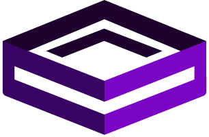
Agent Sandbox
Kubernetes SIG Apps, one pod per agent
Agent Substrate
CNCF sandbox, many agents per node
Agent Sandbox: agent-sandbox.sigs.k8s.io
Agent Substrate: github.com/agent-substrate/substrate
The implementation
Java !?!?
Quarkus
LangChain4j
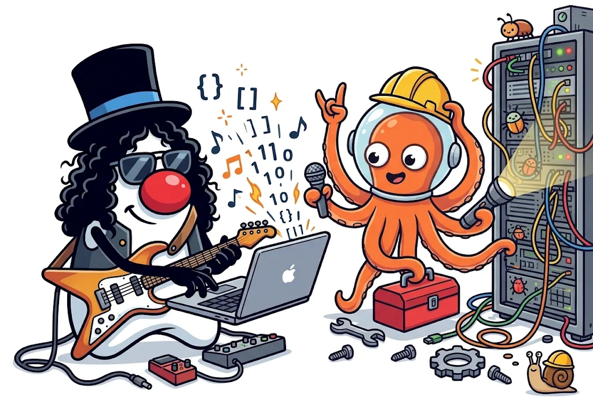
Agentic workflows as typed interfaces
AnalysisOrchestratorAgent.java
1
1
@SequenceAgent
The annotation declares the order
2
2
Three sub-agents
Two fetch data and one decides
3
3
The result is a record
fields the gate can score
@SequenceAgent(
description = "Complete Kubernetes rollout analysis workflow",
outputKey = "analysisResult",
subAgents = {
AnalysisDataAgent.class,
DataCombinerAgent.class,
AnalysisAgent.class
}
)
ResultWithAgenticScope<AnalysisResult> execute(
String message,
String namespace,
String stableSelector,
String canarySelector
);
Demo time !!
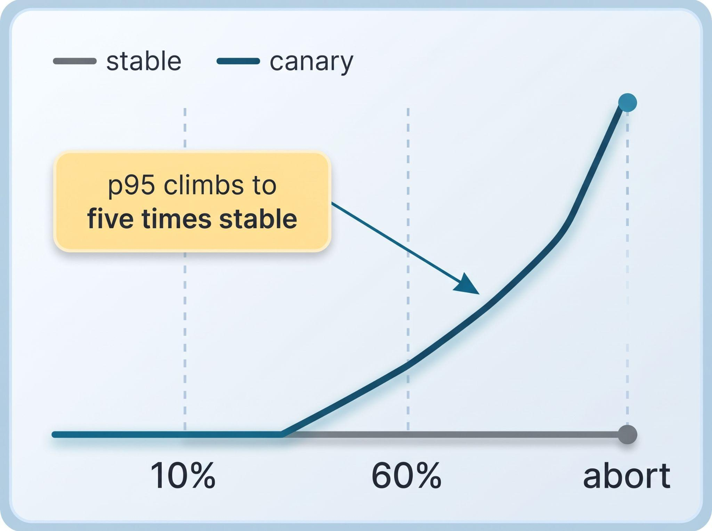
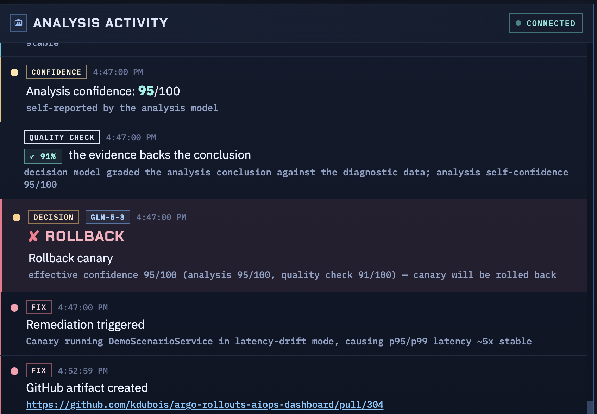
What you just saw (hopefully)
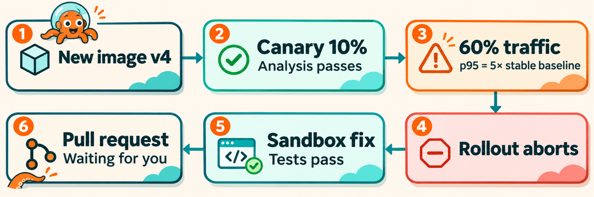
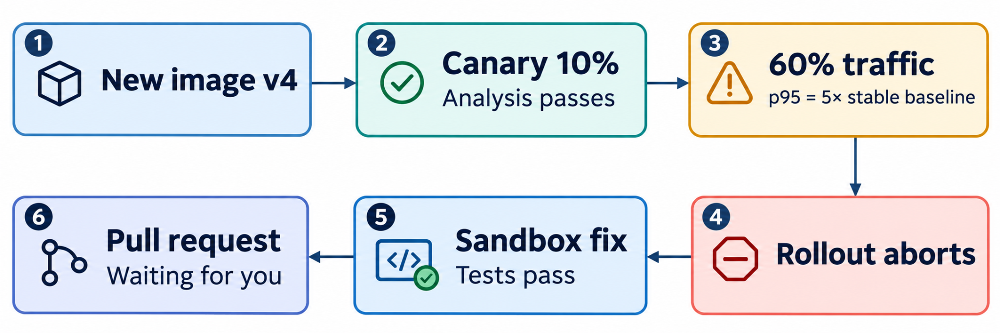
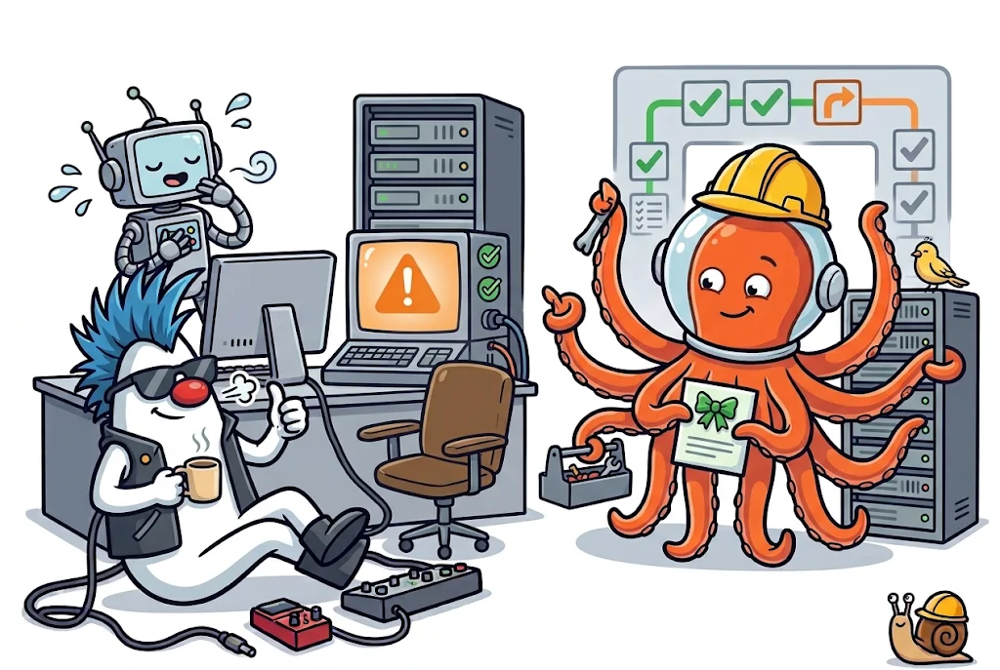
THANK YOU
Keep the rollout
Add the loop
All open source!
Kevin Dubois
Carlos Sanchez
The analysis agent and the LangChain4j workflow
Sandbox, coding agent, pull request or issue
argoproj-labs/rollouts-plugin-metric-ai
The Argo Rollouts metric provider that calls it
Session feedback
Scan and rate the talk
Sources
Cloudflare postmortem, 18 Nov 2025
CrowdStrike losses: Parametrix via Reuters
SEC order against Knight Capital
DORA 2025 report
Sonar, State of Code 2026 (Jan 2026)
CodeRabbit, AI vs human code
Lightrun survey, via VentureBeat
Quarkus benchmarks vs Spring Boot
Agent Sandbox, Kubernetes SIG Apps
Agent Substrate, CNCF sandbox